Liver ultrasound
The liver is an ideal organ for sonographic evaluation based on its large size, homogeneous parenchyma, and location high in the abdomen with access provided from both a subcostal and an intercostal approach.
Why liver ultrasound?
Ultrasound is the method of choice for the guidance of interventional procedures performed on the liver, including ablation techniques in those with malignant tumors, biopsy of liver masses, and the insertion of therapeutic devices such as drainage tubes and transjugular intrahepatic portosystemic shunts.
Anatomy
The liver is located in the right upper quadrant. It is almost completely covered by visceral peritoneum and is completely covered by a dense irregular connective tissue layer that lies deep to the peritoneum.
The liver is divided into two principal lobes (a large right lobe and a smaller left lobe) by the falciform ligament, a fold of the mesentery.
The falciform ligament extends from the undersurface of the diaphragm between the two principal lobes of the liver to the superior surface of the liver, helping to suspend the liver in the abdominal cavity.
In the free border of the falciform ligament is the ligamentum teres (round ligament), a remnant of the umbilical vein of the fetus; this fibrous cord extends from the liver to the umbilicus. The right and left coronary ligaments are narrow extensions of the parietal peritoneum that suspend the liver from the diaphragm.
Indications
- Enlarged liver
- Suspected liver abscess.
- Jaundice
- Ascites
- Suspected metastasis in the liver
- Suspected liver mass
- Right upper quadrant pain
Technique/preparation
The patient should take nothing by mouth for 8 hours preceeding the examination. If fluid is essential to prevent dehydration, only watre should be given. If the symptoms are acute, proceed with the examination
The liver is best examined with real-time sonography. Both supine and right anterior oblique positions should be used. Sagittal, transverse, coronal, and subcostal oblique views are suggested using both a standard abdominal transducer and a higherfrequency transducer.
In many patients, the liver is tucked beneath the lower right ribs, so a transducer with a small scanning face, allowing an intercostal approach, is invaluable.
Normal findings
- 1. Size
- Right lobe measuring 13-15 cm in craniocaudal dimension, and left lobe measuring <7cm in width
- 2. Echogenicity
- The normal liver is homogeneous, contain fine level echoes and is either minimally hyperechoic or isoechoic compared to the normal renal cortex. The liver is hypoechoic compared to the spleen
- 3. Contour
- Contour should be regular with a smooth capsule
- 4. Intrahepatic vasculature
- Should be patent with no evidence of thrombosis or dilatation
- 5. Gallbladder
- Normal wall thickness (<3mm) and should be free of stones.
- 6. Bile ducts
- Common bile duct measuring <6mm in diameter
Pathological findings
- 1. Liver Cysts
- Simple hepatic cysts are benign cysts which appear anechoic with a thin, well-demarcated wall and posterior acoustic enhancement.
Complex hepatic cysts may show thick septae or nodules within the cyst. In this case, computed tomography is recommended because biliary cystadenomas and cystic metastases must be considered in the diferential diagnosis.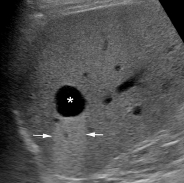
Figure 1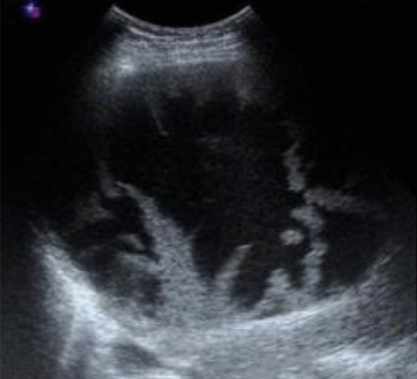
Figure 2Hepatic cysts. Figure 1: A simple hepatic cyst (asterisk), with thin well-defined walls and posterior enhancement (arrows). Figure 2: A complex hepatic cyst with multiple thick septae - 2. Peribiliary Cysts
- 3. Autosomal Dominant Polycystic Disease
- 4. Biliary Hamartomas (von Meyenburg Complexes)
- 5. Viral Hepatitis
- In acute Hepatitis, the liver parenchyma may have a difusely decreased echogenicity, with accentuated brightness of the portal triads or periportal cuffing. Hepatomegaly and thickening of the gallbladder wall are associated findings.
Most cases of chronic hepatitis are sonographically normal. When cirrhosis develops, sonography may demonstrate a coarsened echotexture and other morphologic changes of cirrhosis.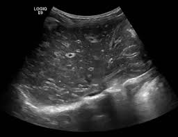
Figure 1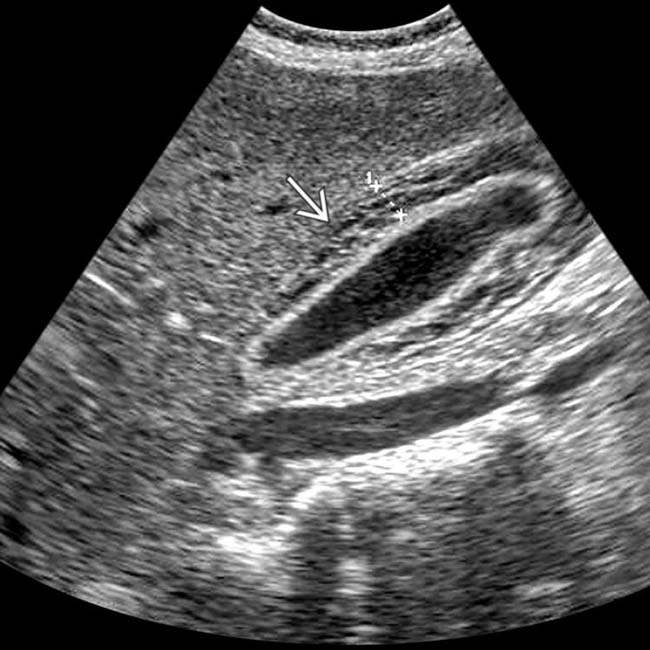
Figure 2Viral Hepatitis. Figure 1: There is increased periportal cuffing giving a starry sky appearence of liver parenchyma. Figure 2: There is thickening of gallbladder wall (arrow) - 6. Liver abscess
- The abscess wall can vary from well defined to irregular and thick. They appear as cystic, with the fluid ranging from echo free to highly echogenic. Regions of early suppuration may appear solid with altered echogenicity, usually hypoechoic, related to the presence of necrotic hepatocytes. Echogenic foci with a posterior reverberation artifact due to gas-producing organisms
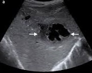
Figure 1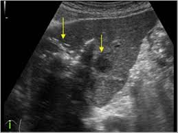
Figure 2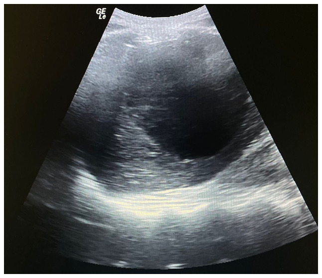
Figure 3Liver Abscess. Figure 1: anechoic, irregular, thick walled cystic liver mass. Figure 2: Echogenic foci with posterior reverberation artifacts. Figure 3: Liver cyst with internal echoes. - 7. Candidiasis
- 8. Hydatid Disease
- These can present as a broad spectrum of sonographic findings.
a) A simple, centrally echo-free cyst with sharp outline and posterior acaustic enhacement. Because of host reaction, there is double wall around the hydatid cyst
b) An echo-free cyst containing fine internal debris due to hydatid sand. These may float freely or settle at the bottom of the cyst.
c) A well-defined cystic mass with internal debris and membrane floating within the cyst. This is a pathognomonic of a hydatid cyst.
d) A complex cyst containing multiple internal cysts and doughter vesicles with echogenic materials filling some of the cysts and intervening spaces. This usually indicates a viable cyst.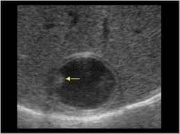
Figure 1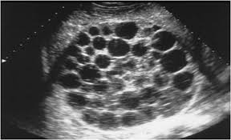
Figure 2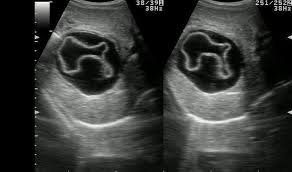
Figure 3Hydatid Cyst. Figure 1: Simple echo-free cyst with double wall and fine internal debris. Figure 2: Complex cyst containing doughter cysts. Figure 3: A well-defined cyst with internal floating membranes - 9. Schistosomiasis
- 10. Fatty Liver
-
See focal steatosis
Difuse steatosis may appear as follows:
a) Mild. Minimal difuse increase in hepatic echogenicity with normal visualization of diaphragm and intrahepatic vessel borders.
b) Moderate. Moderate difuse increase in hepatic echogenicity with slightly impaired visualization of intrahepatic vessels and diaphragm
c) Severe. Marked increase in echogenicity with poor penetration of posterior segment of right lobe of liver and poor or no visualization of hepatic vessels and diaphragm.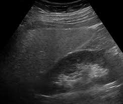
Figure 1: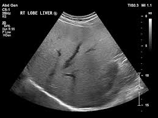
Figure 2: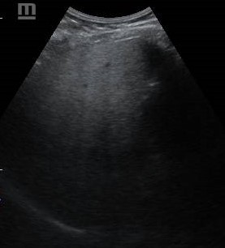
Figure 3:Fatty Liver. Figure 1: Minimal increase of liver echogenicity as compared to renal cortex. Figure 2: Loss of visualization of portal vein walls. Figure 3: Poor penetration of posterior segment. - 11. Glycogen Storage Disease (Glycogenosis)
- 12. Cirrhosis
- 13. Portal Hypertension